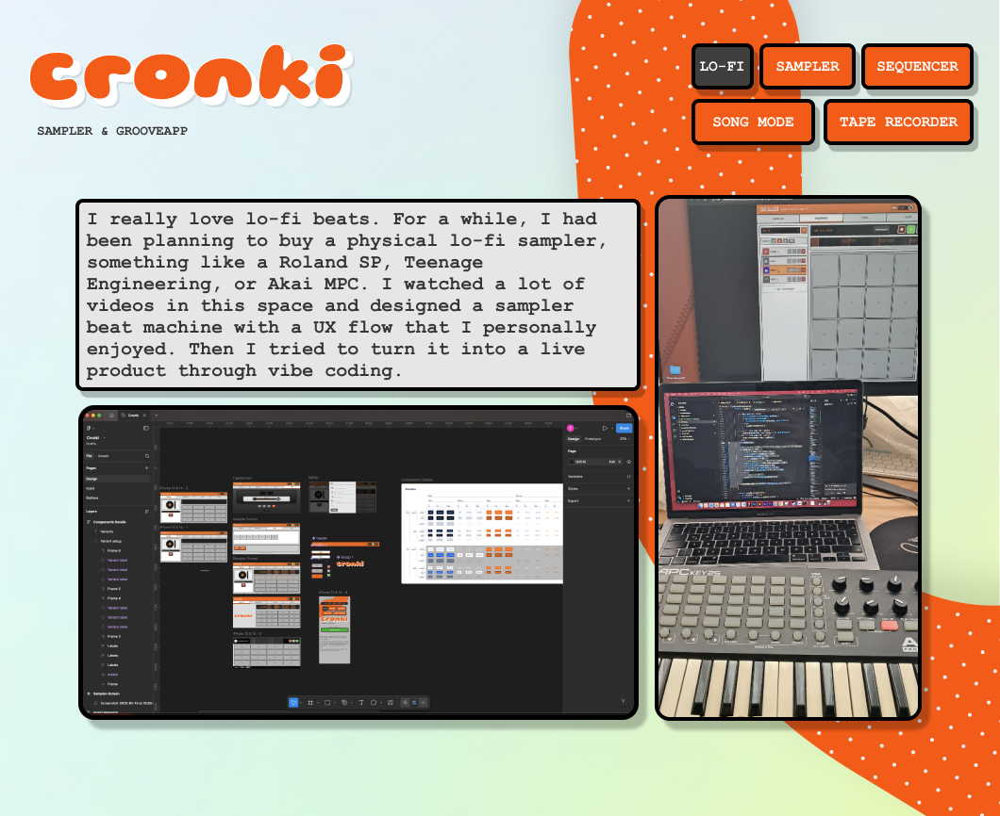
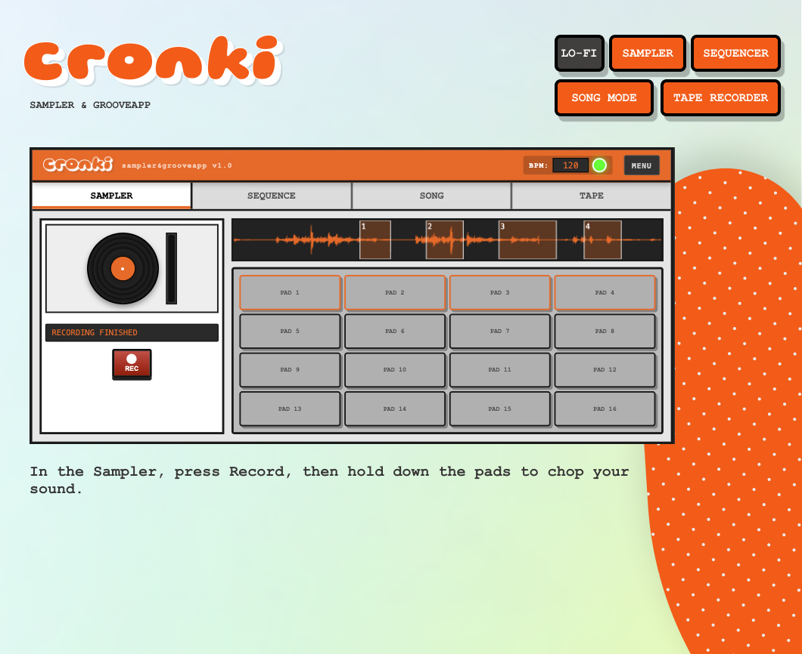
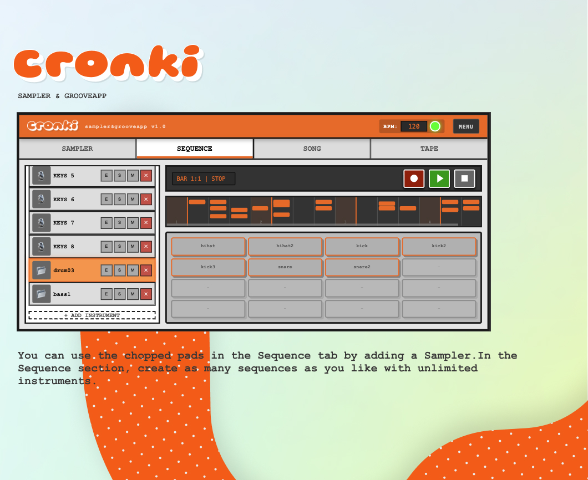
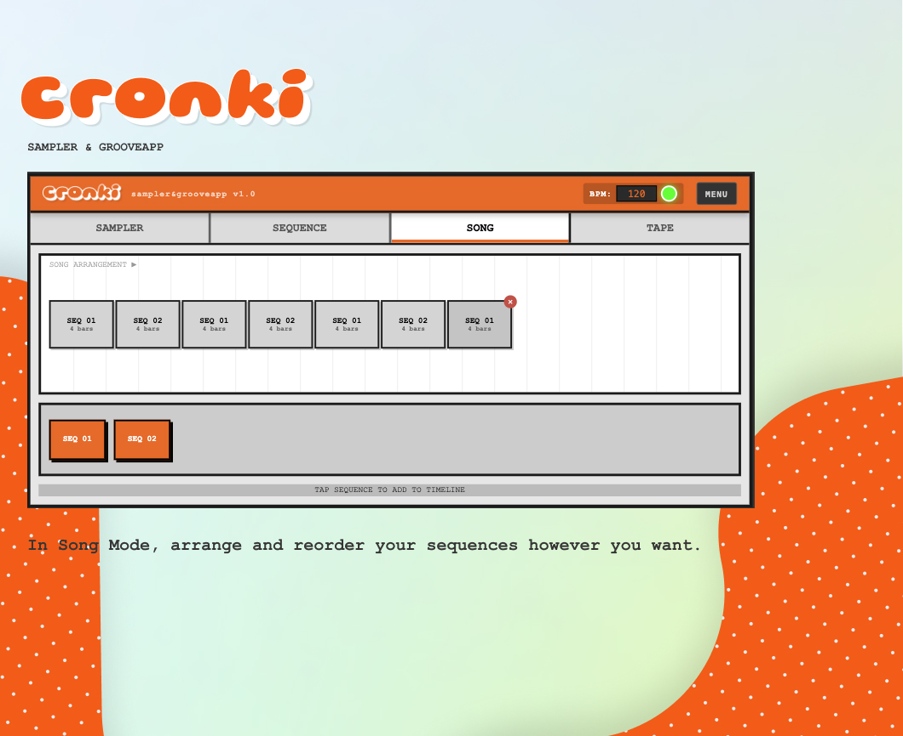
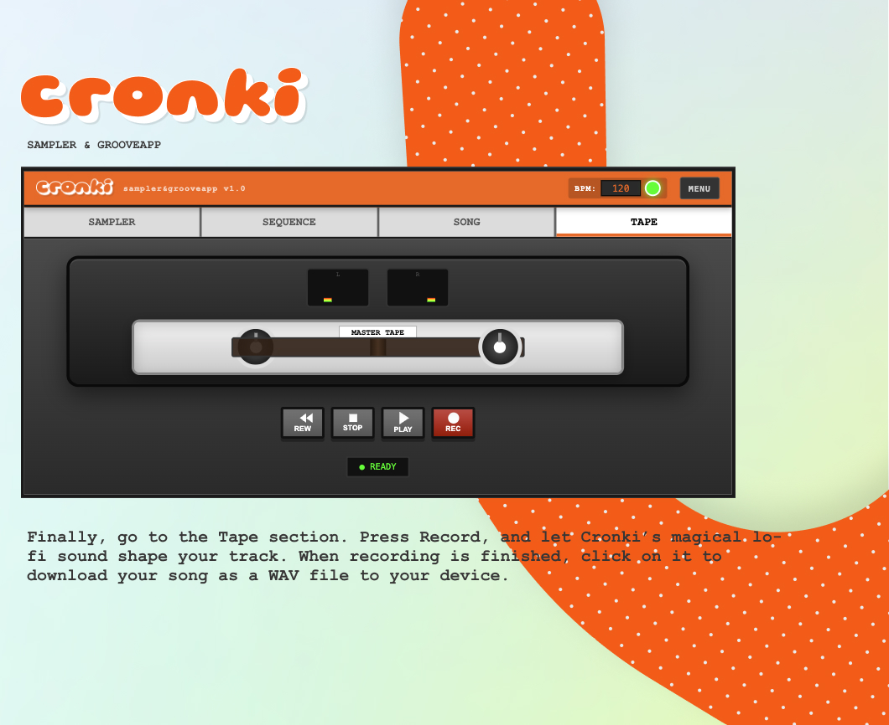

Mobile Sampler & Groovebox App / Beat Machine Design
I designed the UX flow and UI for a fully functional, lo-fi–themed sampler and groovebox. With the help of evolving AI tools, I then brought it to life through vibe coding. You can now test the beta version. I really love lo-fi beats. For a while, I had been planning to buy a physical lo-fi sampler, something like a Roland SP, Teenage Engineering, or Akai MPC. I watched a lot of videos in this space and designed a sampler beat machine with a UX flow that I personally enjoyed. Then I tried to turn it into a live product through vibe coding. cronki sampler




